Pour les boutiques qui livrent elles-mêmes leurs commandes. Tout se fait depuis votre téléphone, en 10 minutes environ.
À qui s’adresse ce guide ?
À vous, si vous avez choisi « J’ai ma propre logistique » à l’ouverture de votre boutique : vous livrez vos clients avec vos propres livreurs ou vos propres véhicules.
Pourquoi c’est important. Tant que la livraison et le reversement ne sont pas réglés, vos produits restent enregistrés mais vos clients ne peuvent pas valider leur commande.
Ce qu’il faut préparer avant de commencer
Pour la livraison
Pour le reversement
Votre délai de préparation (exemple : 24h)
Le poids et le volume maximum que vous pouvez livrer en une fois
Vos véhicules (moto, tricycle, pickup, camion)
Les communes que vous livrez, avec le prix et le délai pour chacune
Votre opérateur Mobile Money (Orange Money, MTN MoMo, Wave ou Moov Money)
Le numéro qui recevra l’argent
Le nom du titulaire, tel qu’il est enregistré chez l’opérateur
Partie 1 — Configurer vos livraisons
Huit étapes. Pour chaque écran à remplir, vous voyez l’écran vide puis l’écran rempli.
1Connectez-vous à votre espace vendeur
Ouvrez ovanie.com dans le navigateur de votre téléphone, touchez « Se connecter », puis saisissez votre e-mail ou votre téléphone et votre mot de passe.
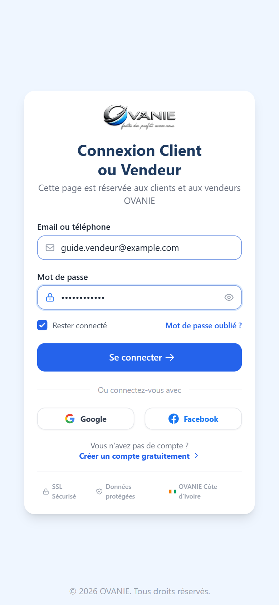
Écran de connexion
2Votre tableau de bord vous amène directement à la livraison
Vous avez choisi « ma propre logistique » à l’ouverture de votre boutique : OVANIE ne vous repose pas la question. Tant que la livraison n’est pas terminée, votre tableau de bord s’ouvre directement sur la page « Paramètres de livraison », avec un message bleu qui rappelle ce qu’il reste à remplir.
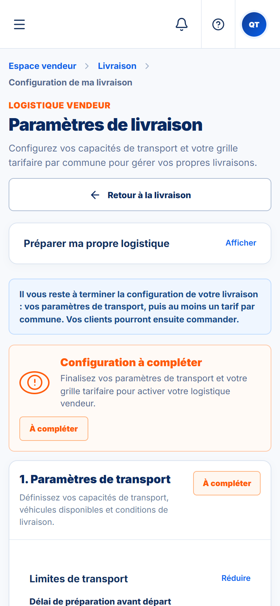
Vous arrivez directement ici
Vous voyez cet écran ? Passez directement à l’étape 4.
3Seulement pour les anciennes boutiques : choisissez « J’ai ma propre logistique »
Si votre boutique a été ouverte avant l’arrivée de ce réglage, OVANIE ne connaît pas encore votre choix. L’écran « Finalisez deux réglages pour vendre » s’affiche alors à la place. Descendez jusqu’au bloc « Livraison », touchez la carte de gauche « J’ai ma propre logistique », puis le bouton orange « Configurer mes zones et tarifs ». Ce choix n’est demandé qu’une seule fois.
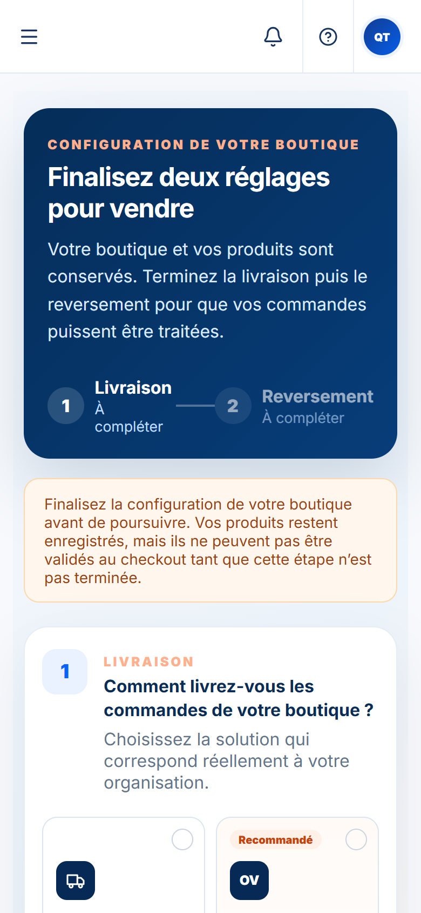
Les deux réglages à finir
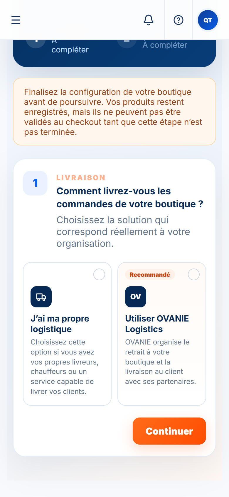
Avant : aucune carte cochée
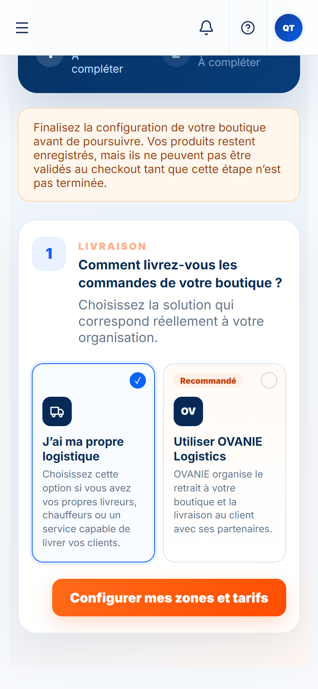
Après : carte de gauche cochée
Vous n’avez finalement pas de livreur ? Touchez la carte de droite, « Utiliser OVANIE Logistics » : OVANIE se charge alors du retrait et de la livraison, et ce guide ne vous concerne plus.
4Vous arrivez sur « Paramètres de livraison »
Cette page contient deux blocs à remplir : 1. Paramètres de transport et 2. Grille tarifaire par commune. L’étiquette « À compléter » disparaît quand un bloc est terminé.
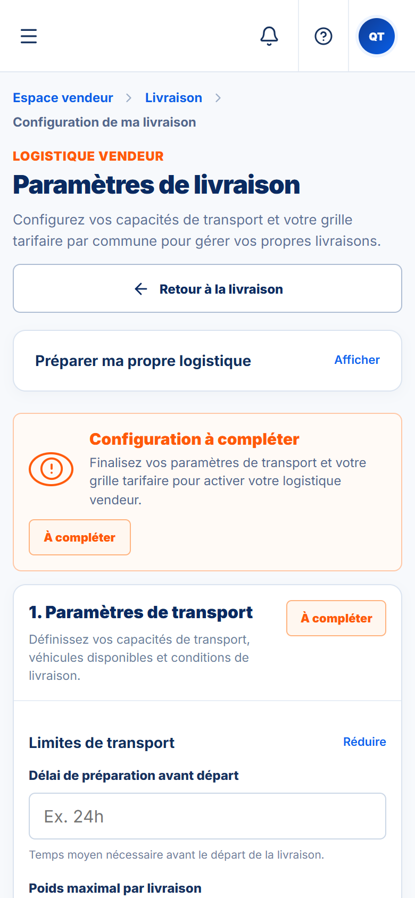
La page à remplir
5Indiquez vos limites de transport
Dans « Limites de transport », remplissez les trois champs :
Délai de préparation avant départ : le temps qu’il vous faut avant que la livraison parte (exemple : 24h).
Poids maximal par livraison, en kilos (exemple : 500).
Volume maximal par livraison, en mètres cubes (exemple : 3).
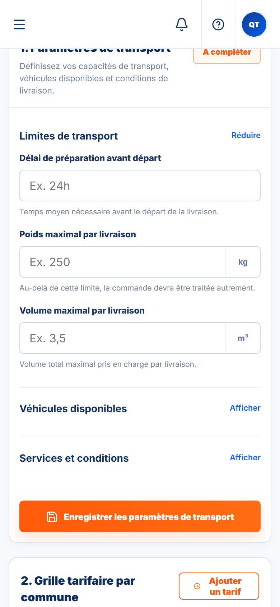
Avant : champs videsAprès : champs remplis
6Choisissez vos véhicules, puis écrivez vos conditions
Touchez « Afficher » à droite de « Véhicules disponibles » et cochez les véhicules que vous utilisez.
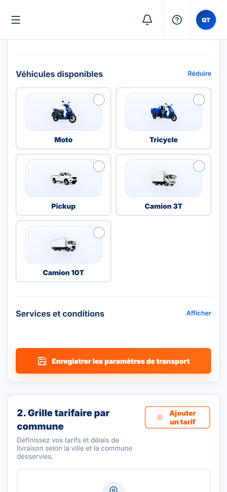
Avant : rien n’est coché
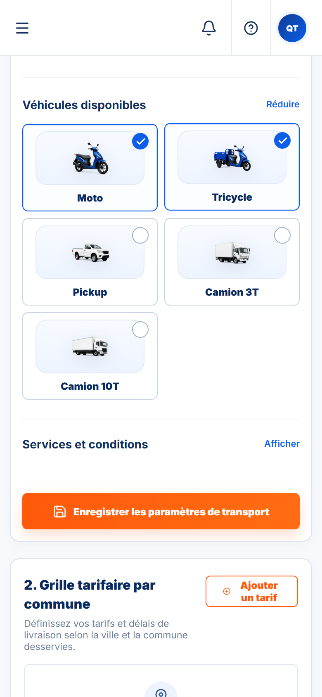
Après : Moto et Tricycle cochés
Touchez ensuite « Afficher » à droite de « Services et conditions » :
Services disponibles (facultatif) : ce que vous proposez en plus, par exemple le déchargement.
Conditions générales de livraison : vos jours, vos horaires, ce que le client doit faire à la réception.
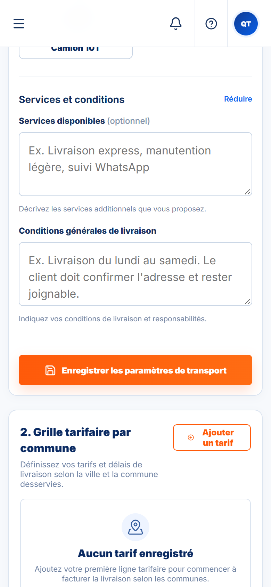
Avant : champs vides
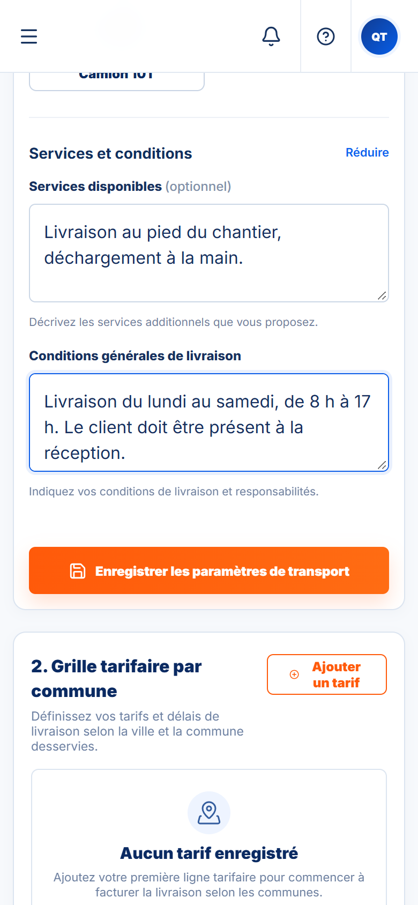
Après : champs remplis
Touchez le bouton orange « Enregistrer les paramètres de transport ». Un message vert confirme l’enregistrement et le bloc 1 passe à « Complet ».
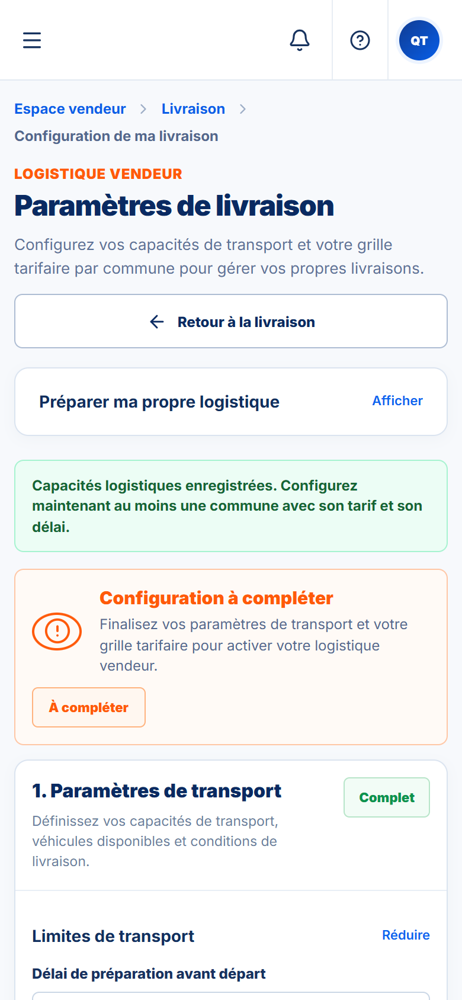
Paramètres enregistrés
7Ajoutez votre premier tarif de livraison
Descendez jusqu’au bloc « 2. Grille tarifaire par commune » et touchez « Ajouter un tarif ».
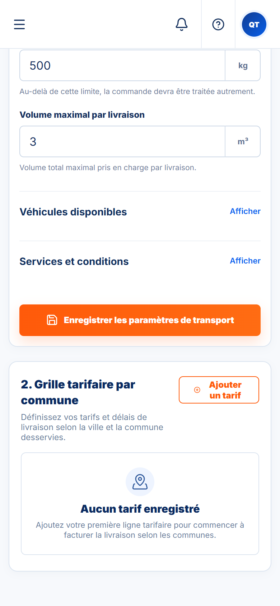
Avant : aucun tarif enregistré
Une fenêtre s’ouvre. Remplissez-la :
Ville : Abidjan est déjà inscrit.
Commune : choisissez la commune livrée (exemple : Cocody).
Véhicule : celui utilisé pour cette commune.
Prix de livraison, en FCFA (exemple : 3000).
Délai estimé (exemple : 24h).
Laissez « Tarif actif au checkout » coché, puis touchez « Ajouter le tarif ».
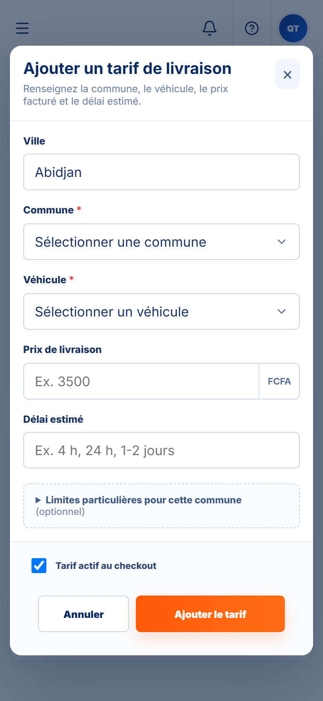
Avant : formulaire vide
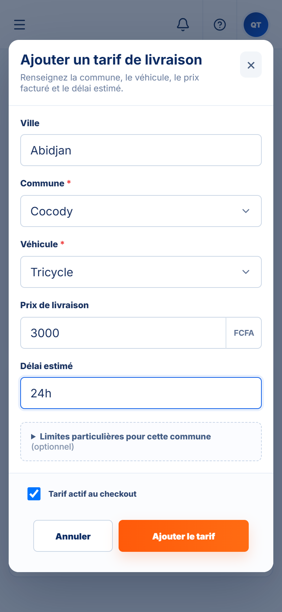
Après : formulaire rempli
Un seul tarif suffit pour activer vos livraisons. Pour livrer d’autres communes, recommencez cette étape pour chacune : un client ne peut commander que si sa commune a un tarif.
8Votre livraison est configurée
Dès le premier tarif ajouté, l’écran de configuration revient avec le message « Votre propre logistique est maintenant opérationnelle ». La livraison est marquée « Configurée » : il ne reste que le reversement.
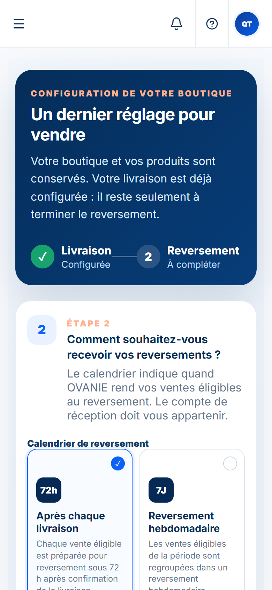
Livraison : configurée
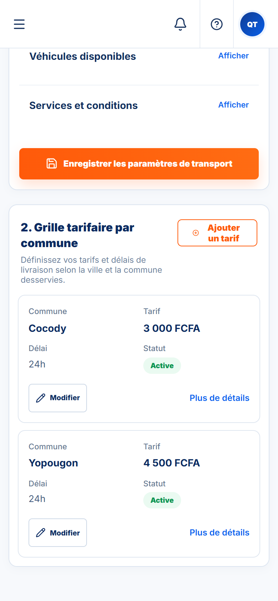
Vos tarifs dans la grille (ici, deux communes)
Partie 2 — Configurer votre reversement
Vous avez déjà indiqué votre calendrier et votre compte Mobile Money à l’ouverture de votre boutique ? Cette partie ne s’affiche pas : votre reversement est déjà réglé, vous n’avez rien à refaire. Elle concerne uniquement les boutiques qui ne l’ont pas encore fait.
Pour les boutiques qui n’ont pas encore indiqué où recevoir leur argent. Trois étapes, sur le même écran.
1Choisissez votre calendrier de reversement
Dans « Comment souhaitez-vous recevoir vos reversements ? », touchez l’une des deux cartes :
Après chaque livraison : chaque vente est préparée pour reversement sous 72 h après la confirmation de la livraison.
Reversement hebdomadaire : les ventes de la semaine sont regroupées en un seul reversement.
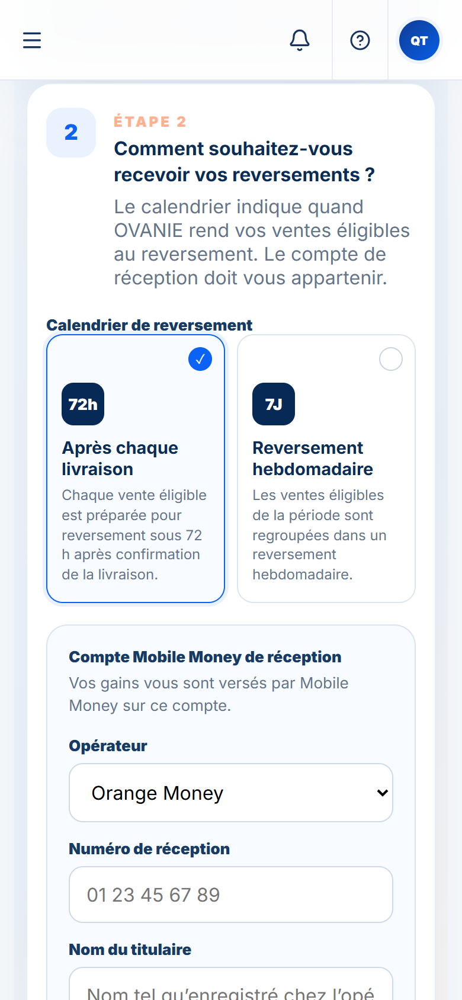
Les deux calendriers possibles
2Indiquez votre compte Mobile Money
Dans « Compte Mobile Money de réception » :
Opérateur : Orange Money, MTN MoMo, Wave ou Moov Money.
Numéro de réception : le numéro qui recevra vos gains.
Nom du titulaire : exactement comme il est enregistré chez l’opérateur.
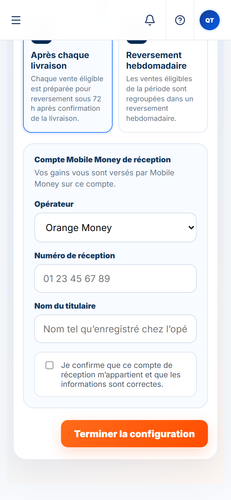
Avant : champs vides
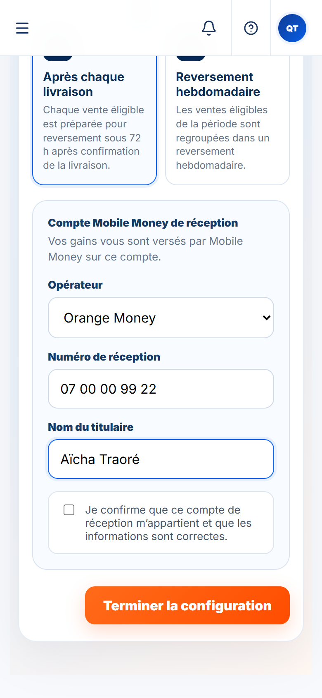
Après : champs remplis
Vérifiez bien le numéro. Le compte doit vous appartenir : c’est sur ce numéro que vos gains seront versés.
3Confirmez et terminez
Cochez la case « Je confirme que ce compte de réception m’appartient… », puis touchez le bouton orange « Terminer la configuration ».
Votre tableau de bord s’ouvre : votre boutique est prête et vos clients peuvent commander.
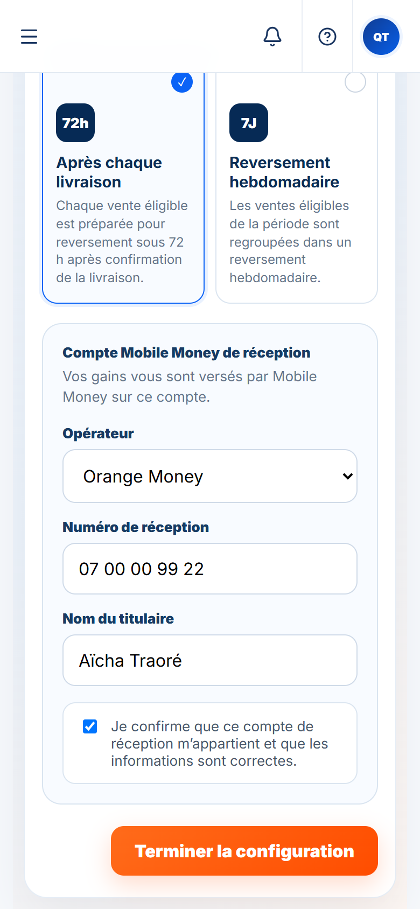
Case cochée, prêt à terminer
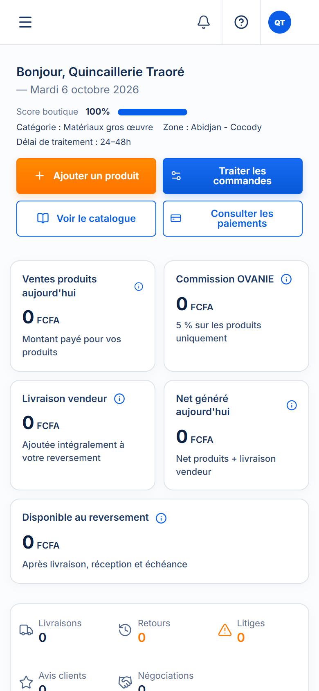
Votre tableau de bord
Partie 3 — Modifier vos réglages plus tard
Vous pouvez tout changer quand vous voulez depuis le menu de votre espace vendeur.
Touchez les trois traits en haut à gauche pour ouvrir le menu :
Livraison : ajouter une commune, changer un prix, un délai ou vos véhicules. Touchez ensuite « Modifier mes informations logistiques ».
Méthode de paiement : changer votre calendrier ou votre compte Mobile Money.
Reversements : suivre l’argent qui vous a été versé.
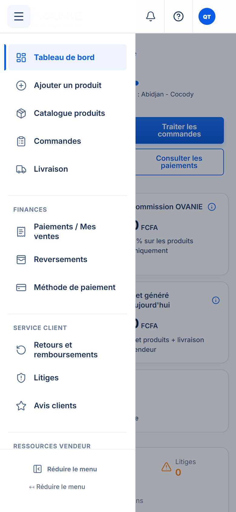
Le menu de votre espace
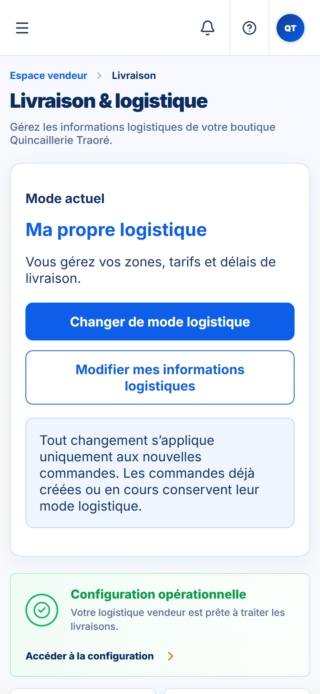
La page « Livraison »
Un changement de livraison ne s’applique qu’aux nouvelles commandes. Les commandes déjà passées gardent les réglages d’origine.